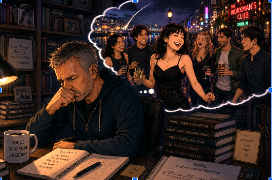

The day you cancelled Scrabble,
that time, that moment,
the present stood still, shaken, stirred
and a shot to the heart.
I knew our sunshine-time was broken
and suddenly I had plenty of time to kill.
My head took the month of June to agree with this old man's shattered heart.
With my brave face on,
knowing you needed the money
and you are not one to shirk,
even the dullest of work.
So being positive I sent you a classy 'Well Done' card,
and my first poem for you.
Wanted so, to perform a reading out loud,
and confuse you with the riddle of the excellent use of the word: 'unabashed',
hoping you would be proud
and not too quick to throw me or this into the pound.
By walking, talking, playing, eating,
with my Lucky Black Asian Cat,
to my not-so-wise Owl,
now as my accidental poetic muse:
a source of inspiration,
my creativity overflowing by just being so close with you.
As I say: "Rare is you!"
For you to care - I want,
sharing the real truth I need - no lies please! I beg you!
Being the best of friends I desire,
for you will keep my loving, ageing heart on fire!
My survival instincts kicked in with this circumstantial rejection,
like a hard slap in the face.
You do not know my past:
with my fiery, loving mother
and my train wreck of a marriage - crashing in the present,
falling down yet another romantic rabbit hole.
And will the White Rabbit giggle: "Graham! You're late again!"
Over a decade to heal; with hidden scars,
which spring a razor-sharp defence mechanism,
around my heart.
So no 'fake' cocktease, coquette,
can penetrate my armour,
with the one exception of you.
Who knew you'd be my kryptonite,
though am no Superman,
and so not in the mood to fly tonight;
not today, not ever, am burnt away!
Do I attract the unavailable type ?
The magic and spark between us in April and May,
an illusion or just another alluring, elegant female,
who understands her power of sexual hype ?
Did your western adventure seduce you into the modern Sisterhood ?
Is that your forever plan ?
Tell me, tell me, please, please!
Or will you just continue to tease!
Or is the hurt,
pain so deep from your past,
that you shut down all your feelings,
coping with the now,
by being oh-so-busy,
slowly marching hither and dither;
thinking, thinking, thinking so long, too deeply
and not so fast!
And letting your boring job dull all your wits!
'Tis not a wonder why you sleep-walk through your mornings.
Wake-up Boo !
Your life is now!
Carpe diem ! Life is short.
One chance, one life,
and for sure I am not ever asking for you to be my wife!
So picture your life fulfilled,
as you meet your maker,
with joy and bliss.
Imagine the road of choices needed.
Is our friendship real to you ?
For me was a heavenly, blissful time.
For you - a time of convenience ?
Now this Old-Owl is feeling oh-so inconvenient.
A disposable man,
if you cared to look hard at home,
you can see me crying,
cast out into your garbage can - not a keepsake,
a heapsake no longer required.
I remember my time in April,
before we met,
so lonely I felt,
and out of the blue this debonair young asian woman swept me off my feet,
with her 'unabashed' smiles from her (as I believed) genuine heart and soul,
and am loving her spontaneous and cheeky Tickety-Boo.
なるようになる
(Naru yō ni naru … What will be, will be.)